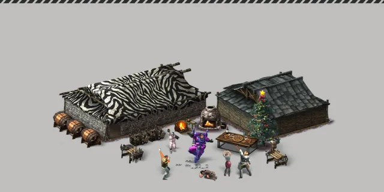
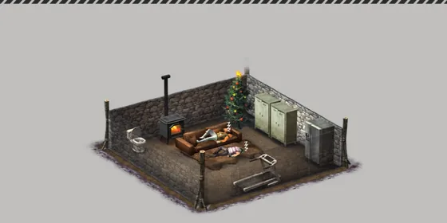
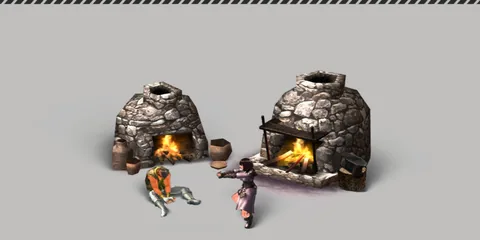

Home › Building & Land
Building Live
Build houses, furniture, workbenches and boxes — pick a site, add materials, build, then maintain, repair, demolish or package them
Some sections on this page are not ready yet

Everything a player places on the ground — tents, houses, workbenches, bonfires, boxes, furniture — is a structure. You build it from a blueprint unlocked through skills (Skills) and fill it with materials from your bag.
What you can do
- Select a construction site → add materials → build (some structures then need extra time to finish)
- Let friends help with finalization, or pay Warp Gems for instant construction
- Use it: open boxes, craft at workbenches, light/put out fires, open/close gates, rest in tents, name it, write on signs
- Houses: modify parts, change textures, place wall decorations, extend floors, complete furniture sets
- Repair when Durability drops (Decay and repair) · demolish to get materials back · package it and place it elsewhere
How to build
- Open Structure Building and pick a blueprint you have learned (unlearned blueprints cannot be built)
- Select Construction Site on the ground — you must stand within 4 tiles and it must not overlap another structure
- Touch the site and put materials into each slot (the item's tags must match the slot) — anyone can help put materials into a site · once everything is in, the slots fill right away (no need to close and reopen the window), and other players with the same site open see the new materials at once
- When all slots are full, press Build once — the build bar runs (its length depends on the structure's size, see Key numbers), and when it fills the structure appears, finishing at the same moment for everyone nearby · some blueprints need a hammer (or saw) in your bag; the tool wears each time a build succeeds
- If the blueprint has a finishing time, the structure stays translucent with scaffolding until the time is up, then it becomes usable
If you walk away or start another action during the build bar, the build is cancelled — the materials stay in the site, no energy is used, and you can press Build again right away.
A structure's level = the average level of the materials you used (within the blueprint's level range) · workbenches get workbench tags capped at this level and may inherit special properties from the main material (Item tags)
Where you can build
- Free ground not covered by another structure · discarded item bundles on the ground block building just like structures — pick the bundle up first, then build over it (Storage)
- Not allowed: in water · on top of trees/rocks/plants that are still standing (felled ones don't block) · tiles the game marks as unbuildable · on the tutorial island — the same rules as the colored frame when you pick a site
- Someone else's Domain: not allowed unless the owner grants the «Build» permission (Domain)
- Tamed Islands: you can only build and place things inside your own Domain — claim a Domain first (Domain)
- Furniture in houses follows the original game's rules:
- The house must be finished, and the piece must sit entirely inside the house frame — you can't straddle the line between inside and outside (Barracks have no walls, so they can be straddled)
- In multi-floor houses you can stack furniture on different floors (upper floor above lower-floor furniture) · a tall piece must not be taller than the floors left in the house, and every floor it covers must be free
- Tiles the game marks as no-place inside a building can't be used (for example some rows of a Sauna)
- Indoor-only items can't be placed outside · items that can't go indoors can't be placed over a house
- Newly built or newly placed Barracks, Saunas, Cabins and Shelters can hold furniture inside
Key numbers
| Item | Value |
|---|---|
| Distance you must stand within (select site/build/use/repair/demolish) | 4 tiles |
| Site selection time | 2 + tiles covered (seconds) |
| Energy for site selection | 1 + 2 × tiles covered |
| Energy to press Build | 1 |
| Build bar (after pressing Build) | 2 + tiles covered (seconds) — 1 tile ≈ 3 s · 2×2 ≈ 6 s · 3×3 ≈ 11 s · 6×4 ≈ 26 s · dragging a house bigger makes the bar longer |
| Demolish bar | 5 + Durability ÷ 10 (seconds) — usually ≈ 5.7 seconds |
| Package bar / placing a packaged structure | 0.5 seconds |
| Energy to demolish | 10 + Durability ÷ 2 — usually ≈ 13.5 |
| Max Durability | 7 (original-game scale) · materials with a «building durability» attribute add/subtract more (2 per level) · minimum 2 |
| Hammer wear per build/modification | 4 |
Structures built before the scale change were converted automatically — their Durability ratio and the time left before they decay away are unchanged.
Example finishing times (after the build bar ends) — these are the original game's values, unchanged; each blueprint's time is shown on the build screen:
| Structure | Finishing time | Max helpers |
|---|---|---|
| House | 3 hours | 6 |
| Brick House | 2 hours | 8 |
| Barracks | 1 hour 30 minutes | 6 |
| Small Box | 30 minutes | 2 |
| Tent | 15 minutes | 2 |
| Wide Box | 16 hours | 3 |
| Expert Workbench · Kitchen | 16 hours | 4 |
| Bonfire · Personal Storage | instant | — |
Helping and instant construction
- Help with Finalization (anyone but the owner): cuts the remaining time by total finishing time ÷ (max helpers + 1) · once per person per site · 3 helps per day
- Instant Construction (owner): pay Warp Gems based on the time left — the number on the button is what is actually charged · not enough Gems = you can't skip · if skipping fails after the Gems are taken, they are refunded (Warp Gems can be exchanged from Durango Coins in the shop — see Warp Gems)
| Time left | Warp Gems |
|---|---|
| up to 1 minute | 1 |
| 15 minutes | 15 |
| 30 minutes | 30 |
| 1 hour | 60 |
| 3 hours | 122 |
| 1 day | 780 |
| 7 days | 3,000 |
Prices between these points scale linearly.
Helping a friend build Not ready
- You can always put materials into someone else's site, and press Help with Finalization
- You can press Build on someone else's site only if you have learned that blueprint — if not, the game says you can't build in the owner's place (you may still add materials), and the site owner has to press Build
Houses and furniture

- Houses (and Barracks) can be dragged to size; materials scale with size · the maximum size follows your house-size skill (2 × 2 tiles to start) · houses can be rotated
- A finished house comes with one Basic Wooden Door Frame at the first wall slot (the corner of the front wall) — you can walk in and out right away (older houses without a door got one automatically) · move or remove it on the Wall Decoration screen
- Modification: swap the materials of a part (walls, floor, roof, pillars) — old materials return to your bag, then you must wait out the modification time (table below) · parts can also get a new texture, which is instant
- Wall Decoration: touch a finished house → Manage Wall Items button; place doors, windows and wall decorations from your bag — one item fits in one place only · take them back any time (owner only) · a house whose top floor has no roof has no wall to decorate on that floor
- Extend: House and Brick House can go up to 3 floors
| Extension | T-Stones |
|---|---|
| 1 → 2 floors | 10,000 |
| 2 → 3 floors | 20,000 |
If an extension fails (for example two extensions at the same time), the T-Stones are refunded.
A house modification has to run its full time — meanwhile the structure is translucent and you can't use it (there is no skip button or friend help for modifications):
| Part modified | House | Barracks |
|---|---|---|
| Walls · floor | 1 hour | — |
| Roof | 1 hour | 30 minutes |
| Pillars | 20 minutes | 15 minutes |
Furniture sets and ambiance
Furniture inside a house counts toward a Set Effect once all pieces of a set are present, and creates an Ambiance based on its style — use Look Around inside the house to receive the ambiance effect.
| Set | Pieces needed | Effect |
|---|---|---|
| Kitchen | Cooking Storage · Cooking Countertop · Table | Unattended crafting of cooking recipes on workbenches in the house takes 35% less time (other recipes are not reduced) |
| Living Room | Sofa · Interior Brazier · 2 decorations | Faster energy recovery while resting in the house |
| Bedroom | Table · Bed · Lighting | Faster fatigue recovery, health/life regen while resting in the house |
There are 6 ambiances: Cute Ambiance (higher max energy) · Fragrant Spring Ambiance (higher great-success chance when crafting) · Luxurious Ambiance · Fiery Ambiance (higher attack) · Gloomy Ambiance (animals' pre-emptive attack range shrinks) · Academic Ambiance (shorter skill research) The set menu opens when the house's Antibiotic is ≥ 20 · the ambiance menu opens when Comfort is ≥ 30
Workbenches and unattended crafting

Workbenches (kitchens, kilns, drying racks, …) are needed for workbench recipes; stand within 4 tiles. Some recipes (food, firing, drying, fertilizer) are unattended crafting — leave the job on the bench, go do something else, and collect the result when the time is up (the bench glows when items are finished) · you can cancel a running job, but its materials are lost · who can cancel/collect and how camp tables work: see Unattended crafting at a workbench. See recipes in Crafting and Cooking.
Workbenches, stoves, kilns and drying racks at level 60 get one extra job slot (compared with level 59).
Gates
House doors are wall decorations (the Basic Wooden Door Frame comes with the house · swap it for a wooden door etc. on the Wall Decoration screen). Gate-type structures can be opened/closed by touching them · on someone else's Domain you need the «Enter» permission to use the gate (this permission does not stop anyone walking into the Domain)
Demolishing
Touch your own structure → Demolish · wait for the bar (length depends on Durability, usually ≈ 6 seconds) · the animation follows the hammer in your hands (two-handed / one-handed / bare hands) — time and energy are the same
- Materials come back in proportion to Durability at the moment you demolish (badly decayed = fewer) · a site that was never built returns 100%
- Items in boxes/storage, reins in pens, wall decorations (doors, windows), workbench jobs (finished = the product · unfinished = materials back) and incoming cargo all go to the demolisher's bag · pets in pens go back to their owner
- Demolishing a house also demolishes every piece of furniture inside it (all floors) — materials and contents go to your bag, nothing is left floating
- Returned items enter your bag even if it is full (nothing is lost)
Domain owners who touch someone else's structure on their own Domain get Demolish and Package options · demolish = materials go to the demolisher's bag · the contents are mailed back to the original builder · package = see Domain
Packaging and moving Live
Packageable structures: touch → Package (the owner · or the owner of the Domain it stands on — see Domain). It becomes a «Packaged Construction» item or a Moving Box in your bag. Packaging your own structure keeps everything — level, Durability, name, box contents · Durability does not drop while you carry it · place it somewhere new without rebuilding.
| Item | Value |
|---|---|
| Packaging fee inside your own Domain / your clan's Domain | free |
| Packaging fee outside a Domain | 100 × structure level T-Stones (e.g. level 50 = 5,000) |
| Packaging bar | 0.5 seconds |
- The package's name, description and icon are those of the structure inside (not an empty box) — in your bag, boxes, mail and the market
- You pay before packaging · if packaging fails you get the fee back · not enough T-Stones = you can't package, nothing is lost
- Structures at zero Durability can't be packaged — repair or demolish only
- Packaging a house demolishes the furniture you built inside it back into your bag, like demolishing the house · furniture other players built in the house is mailed back whole to its builder (as a package if it can be packaged, otherwise as materials by Durability + its contents) with a notice
Placing a packaged structure Live
- Placing follows the same rules as building (Where you can build) · a structure packaged while rotated places with the same direction and grid you saw · on a Tamed Island it can only be placed inside your own Domain
- It keeps the Durability it had when packaged (it is not refilled) · shop items are always full
- Decay follows where you place it — on a Domain = the in-Domain rule (7 days, never vanishes) · outside a Domain = the outside rule, and the 10-minute "nobody uses it" clock starts when you place it (Decay)
- The Personal Stage (sold in the shop) can be placed anywhere, not only on a personal island · touching it opens the dance minigame; there is no crafting buff, whatever the in-game item description says
Unfinished sites outside your land are cleaned up Not ready
A construction site that is not finished yet (the site is placed but the materials aren't all in, or Build hasn't been pressed) and stands outside your own and your clan's Domain (including the Domain of a system character) is removed automatically if nobody touches it for 24 hours.
- «Touching» = placing the site · opening the site window · putting in materials · pressing Build — each one restarts the 24 hours
- Every material you put in is returned by mail (the same items) with the title «Construction site outside your land was cleaned up — materials returned» (Thai in game); open your mailbox and claim it
- Not affected: finished structures (normal decay rules apply — Decay) · sites whose finishing timer is running · sites on your own or your clan's Domain · sites on another player's Domain (for example a friend who gave you the «Build» permission) · sites on the tutorial island
- The server checks while players are nearby, so a site nobody walks past is removed when someone gets close (the time keeps counting meanwhile)
Decorative flags Not ready
Two standing flags are buildable by everyone from the build menu, with no skill to learn first: the Thai Flag and the Durango:Reborn Flag (a white flag with the server icon).
- 1×1, can stand indoors or outdoors, rotates in 4 directions · no materials are specified and there is no finishing time · can be packaged and moved
- You need the PC game version 3.1.5 or later to see the flag cloth · on mobile the flag itself is not visible yet
Houses reappear when you come back
Walk far away and run back — your house and nearby structures load again as you approach, no relog needed.
Still can't see a structure or animal that should be there → type /reload (or /รีโหลด) in chat and the server re-sends the structures and animals around you · once per 30 seconds · the reply is Thai-only · if it is still invisible after that, the model file for it is missing on the server (not a connection problem) — tell the staff
No lag in areas packed with buildings Live
Walking around islands packed with houses and structures (e.g. Tamed Islands, Safe Houses) no longer makes the server lag — other players and animals move smoothly and your actions respond right away.
- Houses and structures still load completely and look the same
- Box contents load when you touch/open a box, not in advance
- Nothing for players to do
Not on this server Not ready
- Structures taking damage from animal or player attacks
- A time limit to finish a construction site — unfinished sites on your own or your clan's Domain stay indefinitely (outside a Domain, untouched sites are cleaned up — see Unfinished sites outside your land are cleaned up)